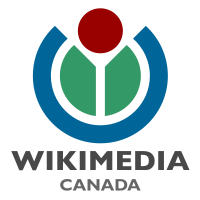

|  |
Rejoignez ou faites un don à Wikimédia Canada Wikimédia Canada est un organisme à but non lucratif qui agit en tant chapitre canadien de la Fondation Wikimédia. Avec ses chapitres frères au travers du monde, Wikimédia Canada a pour but de faire en sorte que tous les êtres humains du monde aient accès librement et gratuitement à l'ensemble des connaissances dans leur propre langue. Pour plus d'informations, consultez la page «À propos de nous». Adhésion Wikimédia Canada est une organisation basée sur ses membres; notre travail serait impossible sans les idées et les efforts de nos membres. L'adhésion à Wikimédia Canada est ouverte à tous les citoyens canadiens ou les résidents légaux d'au moins 12 mois qui partagent nos objectifs. Le fait d'être membre vous permet d'assister et de voter aux assemblées officielles des membres où nous décidons des politiques à long terme et élisons le conseil d'administration. À quoi servent vos dons Vos dons servent à l'ensemble des projets de Wikimédia Canada à travers le pays qui ont pour but d'encourager la création et la distribution de contenu éducatif gratuitement. Nos projets passés incluent des leçons pour enseigner aux gens comment contribuer à Wikipédia et des concours photographiques afin de créer des photos des monuments canadiens sous licence libre. Dans le futur, nous planifions effectuer davantage de projets similaires en plus d'établir un partenariat avec les musées et les galeries afin d'accroître l'accès à leurs collections, d'encourager la création de plus de contenu libre à propos du Canada, de traduire des articles de Wikipédia dans les langues autochtones et des immigrants canadiens, de développer de nouvelles technologies afin d'aider les projets en ligne de la Fondation Wikimédia et de supporter les initiatives des groupes de contributeurs locaux. Pour en savoir plus sur nos projets, consultez la page de nos projets. |
Joignez Wikimédia Canada Pour acheter une pleine adhésion Wikimédia Canada, choisir vos options ci-dessous et cliquer sur «Payer». Vous serez amené à PayPal pour effectuer votre transaction. Faites un don à Wikimédia Canada Cliquez sur ce bouton pour effectuer un don du montant de votre choix à Wikimédia Canada. Présentement, Wikimédia Canada ne peut pas remettre de reçu pour dons à des fins d'impôt, mais notre demande de reconnaissance en tant qu'organisme charitable est en cours auprès de Revenu Canada. |
|
Lorsque vous vous inscrivez ou faites un don, Wikimédia Canada demande votre vrai nom, votre adresse électronique et votre adresse postale pour nous permettre de rester en contact avec vous. Ces informations sont sujettes à notre politique de confidentialité envers les adhésions. Nous ne donnons pas vos renseignements à quiconque, sauf lorsque légalement tenus de le faire. Vous pouvez choisir de ne plus recevoir des messages de notre part à tout moment. Si vous avez des questions sur l'adhésion, communiquez avec notre coordonnateur de l'adhésion. Pour les questions concernant les dons, contactez notre président. |